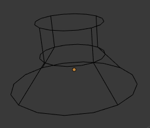
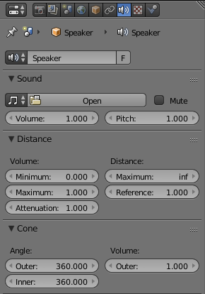

Speaker¶

Speaker Object.
The speaker object is used to give sound in the 3D视图. After adding the object the various settings can be changed in the properties editor.
Options¶
Sound¶
- Mute
- Toggles whether or not the sound can be heard.
- Volume
- Adjust the loudness of the sound
- Pitch
- Can be used to bend the pitch of the sound to be either deeper or higher.
Distance¶

Volume:
- Minimum
- Minimum volume, no matter how far the object is.
- Maximum
- Maximum volume, no matter how far the object is.
- Attenuation
- How strong the distance affects the volume.
Distance:
- Maximum
- Maximum distance for volume calculation.
- 参考
- 参考 distance at which volume is 100%.
Cone¶
Angle:
- Outer
- Angle of the outer cone in degrees. Outside this cone the volume is the outer cone volume (see below). Between the inner and outer cone the volume is interpolated.
- Inner
- Angle of the inner cone in degrees. Inside the cone the volume is 100%.
Volume:
- Outer
- Volume outside the outer cone.